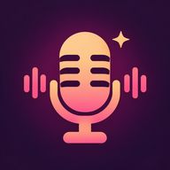

マイクで遊ぶ早口言葉
手本を聴いて、同じ早口言葉を3回。どこまで言える？
100 / 100点
85点以上でクリアミス合計 0回
最初はオフです。オンにして録音を始めると、ブラウザによっては音声が認識サービスへ送られます。録音だけならこのページ内で聴いて自己採点できます。ページを離れると設定はオフに戻ります。マイクなしでも遊べます。
録音は今開いているページで再生できます。クリア記録はこのブラウザに保存します。音声認識は初期設定ではオフです。オンの場合、ブラウザによっては認識サービスに音声を送ります。録音自体はクリア記録に保存しません。
全200問クリア
つまずいた言葉も、言えた瞬間の笑顔も、今夜のあなたの一部。最後のお題を読み終えたら、好きなひと言をもう一度。